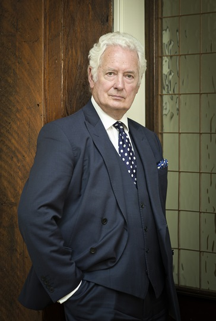

Nicholas Purnell KC

"He is a titan of the Bar."
- Legal 500
"He knows everything there is to know and is the go-to name in this area."
“The Counsel of choice for corporate clients and individuals of note”
- Chambers & Partners
Nicholas Purnell KC's career at the Bar spans over four decades and includes 20 years as a Recorder of the Crown Court and as a Deputy High Court Judge. Nicholas has covered every area of criminal and criminal-related law. His immense experience enables him to bring a commanding level of expertise and strategic planning to each new case.
Nicholas practises principally in commercial and business crime and in regulatory and professional disciplinary matters. When instructed in the investigation stage, he advises clients in cases under examination by global regulatory and prosecuting authorities including the Serious Fraud Office (SFO), the Financial Conduct Authority, the US Department of Justice and the Securities and Exchange Commission.
The development of collaborative investigations across jurisdictions requires the appropriate team to be in place to provide joint advice on the impact of managing the response to investigations on a global basis. Nicholas has specialist experience in the development of the appropriate strategy to enable businesses to develop and cope with the resource demands imposed by such investigations.
Recent & Current Cases
Nicholas acted for ICBC Standard Bank to negotiate the first ever Deferred Prosecution Agreement with the Serious Fraud Office to be approved in the UK. Nicholas appeared before the President of the Queen’s Bench Division at the High Court to agree the terms of the DPA.
This case marks Nicholas’ hat trick of firsts; the first civil settlement with the SFO for Balfour Beatty; the first attempt at a simultaneous global settlement in the US and the UK with the SFO in Innospec; and the combination of this first charge under s7 of the Bribery Act as part of the process of achieving the Deferred Prosecution Agreement with the SFO.
Nicholas’ recent cases include the successful defence of John Varley, the former Chief Executive of Barclays, in his acquittal of charges of fraud by false representation in a trial brought by the SFO against former directors of the bank in respect of its capital raising from Qatari investors in 2008. Nicholas also successfully represented Carl Rogberg, the former finance director of Tesco, against charges of fraud and false accounting. Victor Dahdaleh in his acquittal in the international corruption and fraud trial brought by the SFO. His representation of a defendant in the ‘Vantis Tax’ fraud case and of a former editor of a national newspaper charged with contempt of Parliament are reflective of the variety of the cases that have come to court.
The major element of Nicholas’ practice is focused upon advising in cases that are subject to investigations in the UK and abroad which may never result in trial. Currently, Nicholas is advising a global bank in an investigation by the FCA and the DoJ.
Other notable instructions in recent years include:
- Representing a former Governor of Delta State in a multi-million pound corruption trial
- Representing a Director of Mabey & Johnson Ltd, charged with international sanctions violations
- Civil Aviation Authority v Travel Republic: Successfully represented Travel Republic Ltd leading to an acquittal by the regulator and success at appeal in the proceedings brought by the CAA
- Representing Thyssen Elevator Ltd in a corporate plea agreement in the recent corporate manslaughter proceedings concerning health and safety breaches in a banker’s death at Holmes Place
- Representing Sports Direct in their Successful Competition Appeals Tribunal hearing